Crônicas de Valedouro — área piloto v0.41
Capturas reais do Godot 4.6.3. Praça, rua e saída norte, com vegetação restaurada na borda da cidade e novos encontros nos arredores. HUD radial 3 preservado.
Oito moradores (sete percorrem rotas, um comerciante permanece no mercado), 16 poses humanas e 18 poses de criaturas. Contatos renderizados: 8 elementos de vegetação, 30 amostras de poses/espelhamento humano e 36 de criaturas. Interior é o cenário existente com novos moradores.
Relatório técnico · Medições anteriores · Medições posteriores
Praça
Antes — v0.40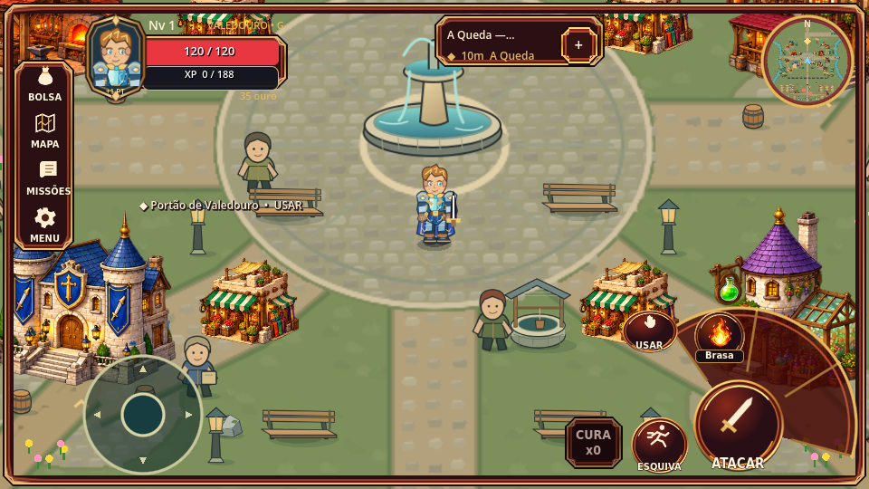
Depois — v0.41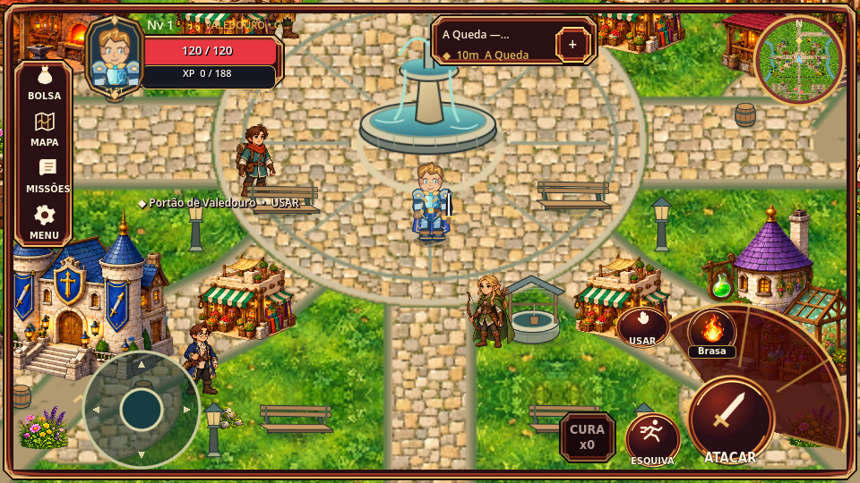
Rua residencial
Antes — v0.40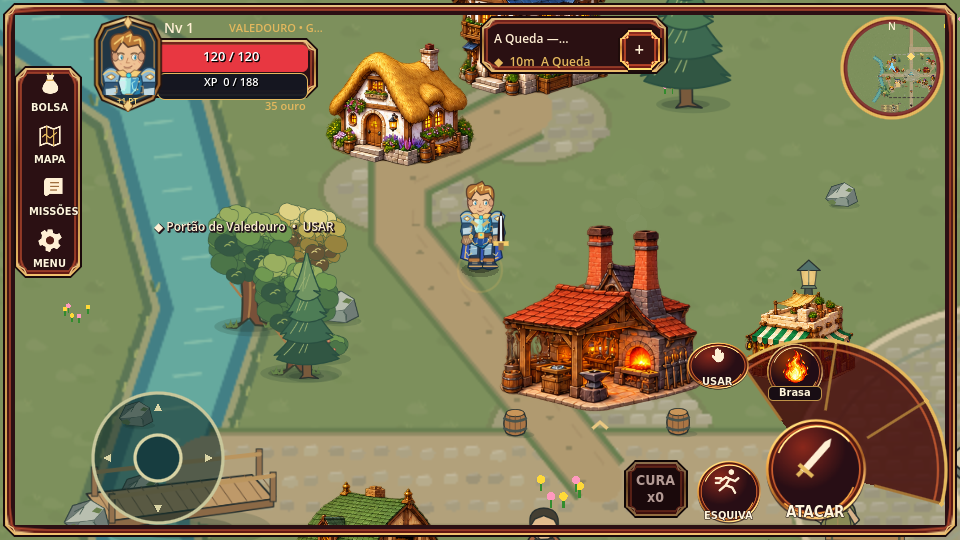
Depois — v0.41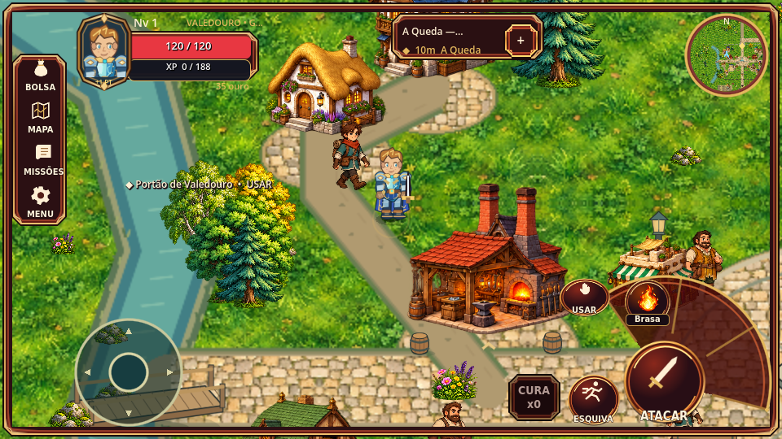
Saída norte
Antes — v0.40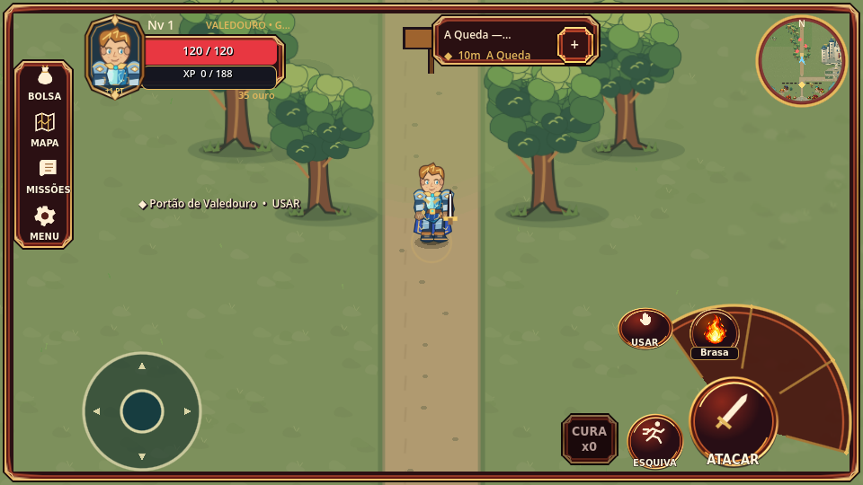
Depois — v0.41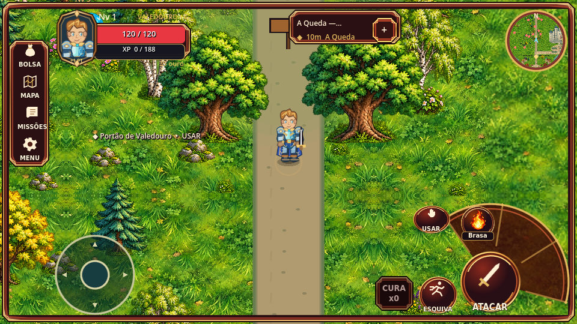
Arredores a oeste
Antes — v0.40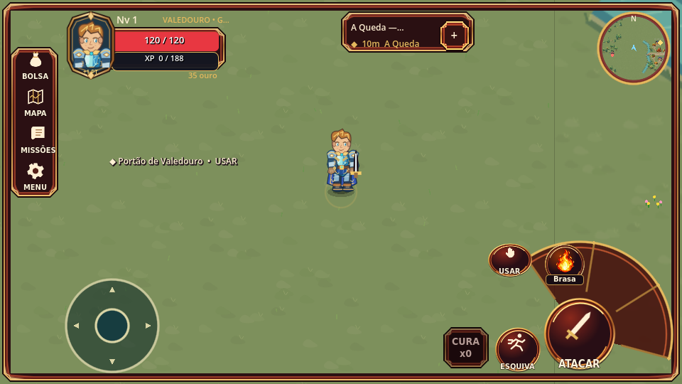
Depois — v0.41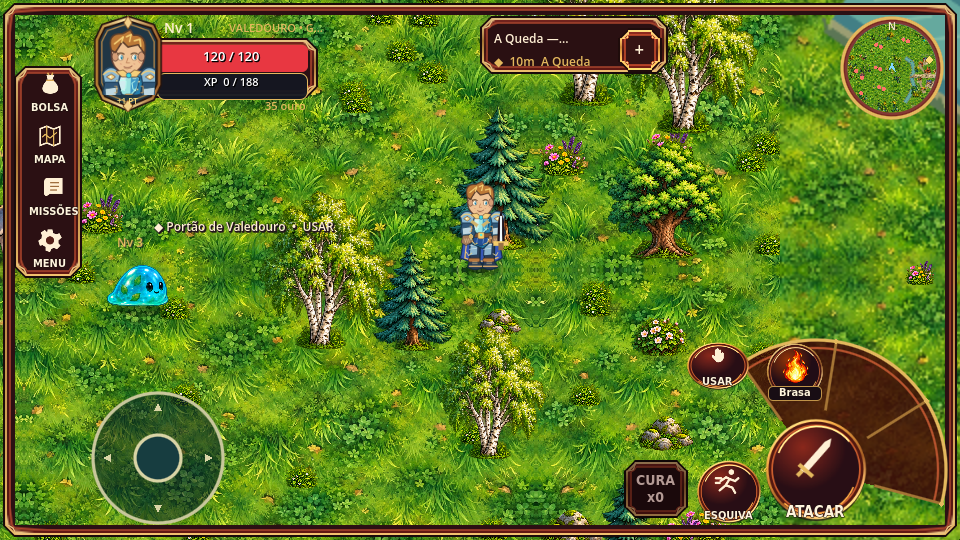
Campos e encontros
Antes — v0.40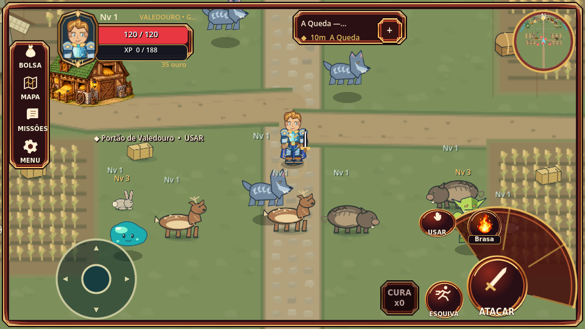
Depois — v0.41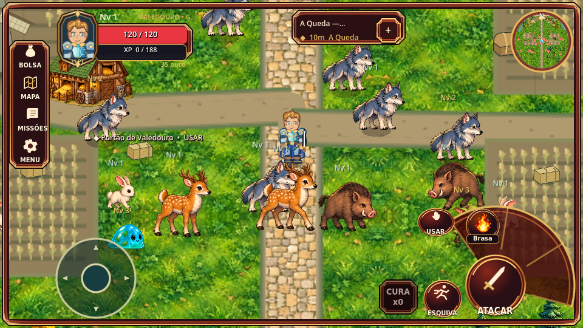
Oito elementos de vegetação
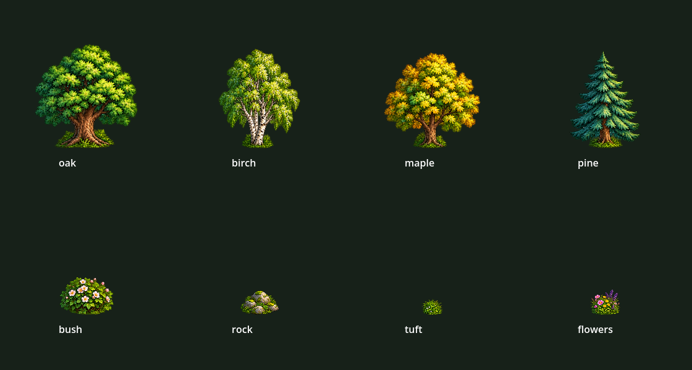
Moradores e poses
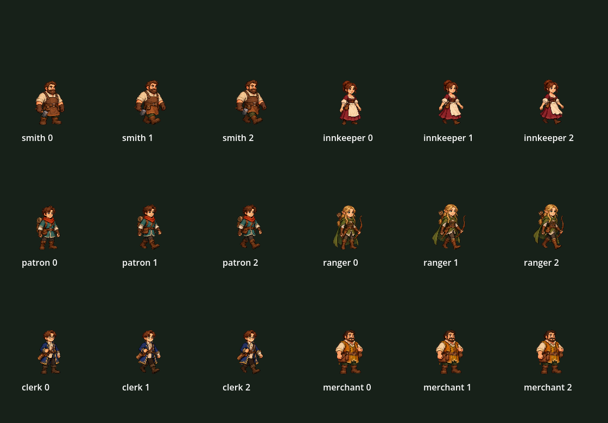
Criaturas e poses de caminhada
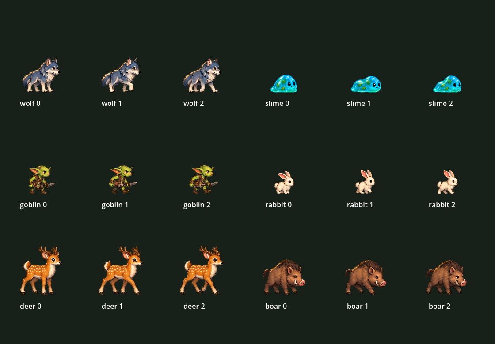